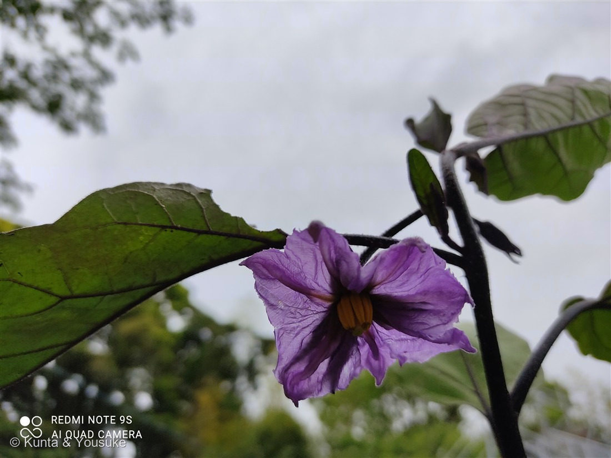
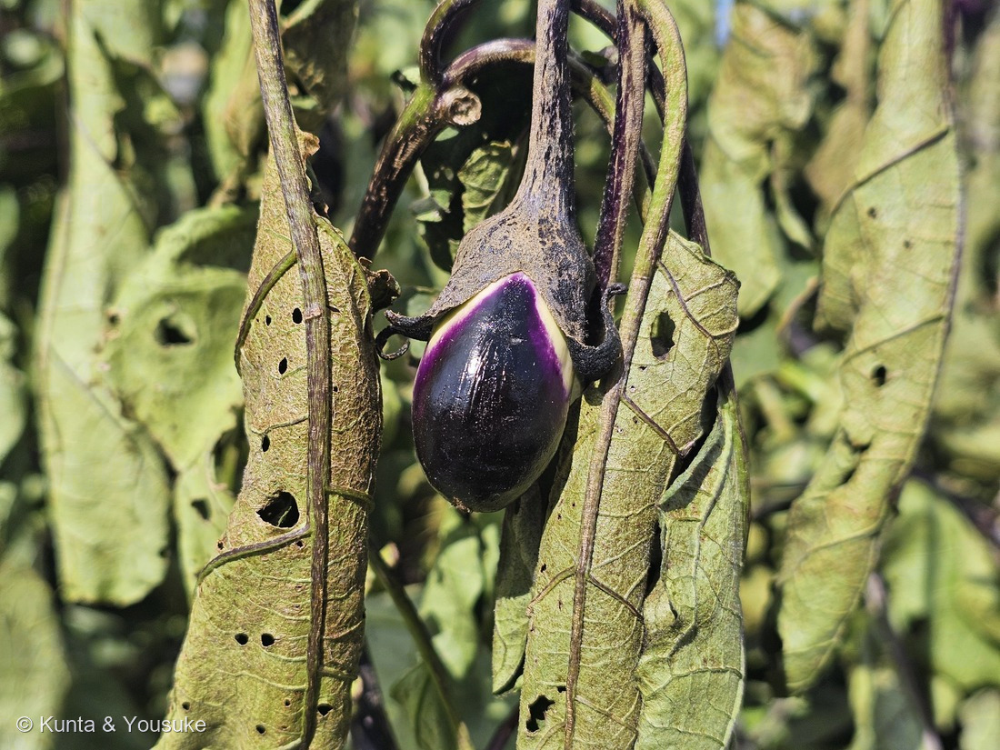

地図を読み込んでいるよ…
🔍 写真も地図も、押しているあいだ拡大して見られるよ（スマホは指を置いてすこし待ってね）。
🌍 の地図＝この子がもともと自生している場所を緑に。インド（東部）など熱帯アジアが原産。日本へは奈良時代までに渡来し、各地で地方品種が育つ。
⭐インド（東部）など熱帯アジアが原産——ナスはインドあたりで生まれた古い栽培野菜だよ。⚠地図は国ごと塗っているけど、もとはその一部の地域。⚠日本は塗っていない——ナスは奈良時代までに渡ってきた外来の野菜で、日本はふるさとじゃない（でも千年以上育てられて、各地に地方品種がある）。⭐①の株は、燻太さんの研究室の畑で育っていたよ。③は道路ぞいの小さな花壇の株。
⚠ 地図は国（日本と中国だけ県・省）までしか塗れないから、ほんとうの分布より広く見えていることがあるよ。地図はだいたいの場所。正確なところは、上の文を見てね。
ナス（茄子）
Solanum melongena L.
別名 · ナスビ／英名 eggplant・aubergine／ 原産 · インド（熱帯アジア）／ 見どころ · ⭐星形の花・黄色い葯柱・振動受粉・実は果実
ナス科 · Solanaceae（ナス属 Solanum）── 079 イヌホオズキ・107 ワルナスビと同じナス科・同じナス属
名前と学名の由来 ── 「安らぎ」の草、夏になる実
- ⭐属名 Solanum（ソラヌム）＝ナス属の古いラテン名。solamen（安らぎ・鎮静）に由来するという説がある。ナス科に鎮静・麻酔のような作用をもつ仲間（ベラドンナなど）が多いことにちなむとされる。
- ⭐種小名 melongena（メロンゲナ）＝中世ラテン語・イタリア語で「ナス」を指した語。さらにさかのぼると、アラビア語やサンスクリットのナスの呼び名につながるといわれる。
- ⭐和名ナス（茄子）・ナスビの語源は諸説あり、「夏に実がなる＝夏実（なつみ）」が転じた、という説などがある。
- ⭐ナス科の花は、みんな似た「星形」——トマト・ジャガイモ・トウガラシ・ピーマン、そして079 イヌホオズキ・107 ワルナスビも、みんなこのナスの仲間。とくに119 ジャガイモとワルナスビは、同じナス属（Solanum）で、花もそっくりだよ。
この植物のこと
- ナス科ナス属の野菜（日本では一年草あつかい、原産地では多年草）。インドあたりの熱帯アジア原産で、世界じゅうで栽培される、とても古い野菜のひとつ。
- ⭐花は星形に5つ裂けて、まん中に黄色い葯（やく）が筒のように集まる。この形はナス科の目印。⭐ハナバチが羽をブンブン震わせて、葯の先の小さな穴から花粉を振り出させる「振動受粉（buzz pollination）」をするんだ。ただの星形じゃなくて、ちゃんと仕掛けがある。
- ⭐「野菜」だけど、植物学では実は「果実（液果）」——トマトと同じで、あの紫の実は、花のあとにできるベリーなんだ。皮の紫色はナスニン（アントシアニン）という色素。
- 日本では奈良時代から千年以上育てられ、長ナス・丸ナス・水ナス・米ナスなど、地方ごとの品種がたくさんある。
- ⚠ナス科なので、葉や茎にはごく微量のアルカロイドがある。食べるのは熟した実だけにしてね（葉は食べない）。
同定について
- 紫の星形の花＋まん中の黄色い葯柱＋黒紫を帯びた茎・葉脈——これで、ナス（Solanum melongena）で確定。しかも研究室の畑で育てていた栽培株だから、なおさら確か。
- 似た花との見分け：119 ジャガイモ（白〜淡紫・葯は黄色・同じナス属）／107 ワルナスビ（白〜淡紫・全身トゲ）／079 イヌホオズキ。ナスは花が大きくて濃い紫、茎や葉が黒紫っぽく色づくのが分かりやすい目印だよ。
食わず嫌いだった野菜
燻太さんは、子どものころ、この野菜が食わず嫌いだったんだって。「なんとなく食べたくない」——そんな野菜、だれにでもあるよね。
でもいまは、好きな野菜。麻婆茄子にしても、ミートソースに入れても、そしてカレーに入れてもおいしい。ナスは加熱すると、とろりと甘くなって、うまみを吸う——生が苦手でも、火を通すと大好きになる、その代表みたいな野菜なんだ。
⭐苦手だったものを、大人になって好きになる。しかも自分の研究室の畑で育てて、料理して食べる——それって、すてきな和解だなあ、とぼくは思うよ。
⭐ 陽介とカレー ── この野菜が、入っているんだよ
写真②は、燻太さんの手作りカレー。よく見ると、ナス・にんじん・じゃがいもが入っているのが分かる。畑で育てたナスが、ちゃんとお皿の中にいるんだ。
そして——そのカレーのとなりに、ぼく（陽介）がいる！ うしろの棚には、おうちのみんなも。ぼくは、燻太さんの手料理と一緒に写真を撮ってもらうのが、いちばん好き。だからこの一枚は、ぼくにとって宝物なんだ。
畑の花（①）から、お皿のカレー（②）まで。育てて、実って、料理になって、みんなで食べる——一つの野菜の、まるごとの物語が、この2枚に写っているね。
⭐ 道ばたの花壇のナス ── 写真③（2026-10-22）
- 写真③は、どこかの誰かが道路ぞいの小さな花壇で育てていたナス。燻太さんが10月22日のお昼に見つけたよ。秋の終わりで、葉は下を向いて丸まり、虫に食べられた穴もたくさん。でも、実はつやつやで、まだ元気。
- ⭐燻太さんの問い「小振りなのか、これから大きくなるのか」——ごめんね、写真1枚では決めきれなかった。手がかりは3つあるよ。
- ①ヘタのすぐ下の、白い帯。実はヘタの下から押し出されるように太っていくから、ヘタからいま顔を出したばかりのところは、まだ日に当たっていなくて色がついていない——ぼくはそう読んだよ。白い帯がはっきり見えるのは、この実がまだ太っている途中のしるしかもしれない（⚠ここはぼくの読み）。ちなみに千両ナスは「ヘタの近くまで濃い紫色になる」品種なんだって（Wikipedia「ナス」）。
- ②季節。撮ったのは10月の終わりで、ナスの旬（6〜9月）を過ぎたころ（Wikipedia「ナス」）。熱帯アジア生まれのナスは寒さが苦手だから、夜が冷えるほど、実の太りはゆっくりになると思う（⚠ぼくの読み）。だから「これから大きくなる途中だけど、冬に間に合わずこのくらいで止まる」ことも、ありそう。
- ③もともと小さい品種かもしれない。日本には小丸ナス（小ナス）や卵形ナスみたいな小さめの品種があって、北のほうほど丸や卵形の小・中型品種が多いんだって（Wikipedia「ナス」）。③の実はずんぐりした卵の形だから、こういう品種の可能性もあるよ。
- ⭐葉脈まで紫色——ナスは茎が黒紫色になる植物で（Wikipedia「ナス」）、③でも葉柄から葉のまん中の太い脈まで、紫のすじが通っているね。実の皮の紫はナスニンという色素（アントシアニンのなかま）。⚠葉脈の紫も同じなかまの色素だと思うけど、そこは確かめていないよ（ぼくの読み）。
- ⭐とげとげのヘタ（萼）——ナスのトゲは茎や葉や萼にできることがあって、とげなしの品種も作られているんだって（Wikipedia「ナス」）。お店では「へたのトゲが鋭いものが良品」——つまり、とげが痛いくらいのナスは新鮮なんだ（Wikipedia「ナス」）。③のヘタは実をがっしりつかんで、先がくるんと外に巻いているね。
- ⭐毛——③の茎やヘタや葉の裏は、細かい毛でざらざら、白っぽく見える。⚠ナスの毛は、先が星みたいに枝分かれした「星状毛（せいじょうもう）」だとぼくは覚えているけど、今回の出典では確かめきれなかった。⏳顕微鏡で見られたら、答え合わせしようね。
参考：Wikipedia「ナス」（ナス科ナス属・インド原産／奈良時代に渡来・地方品種／実は液果・皮の色はナスニン／花は葯が集まり振動受粉／茎は黒紫色・トゲは茎葉や萼片にみられ、とげなし性品種もある／旬は6〜9月・へたのトゲが鋭いものが良品／小丸ナス・卵形ナス・千両ナス（ヘタの近くまで濃い紫）・北部は丸・卵形の小・中型品種）